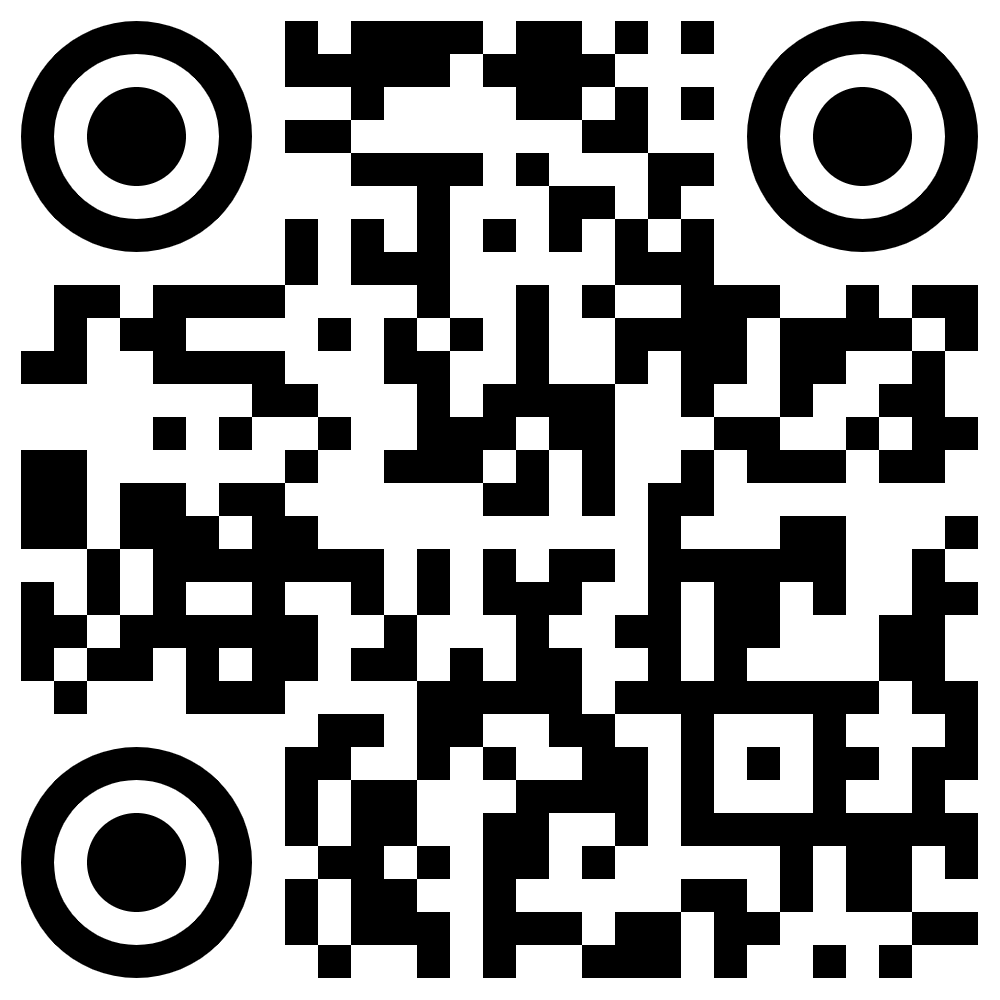

O mne
Volám sa Marko Marciano. Počas dňa pracujem ako software engineer v oblasti kybernetickej bezpečnosti a vývoja umelej inteligencie, no večer ako filozof mysle v Neapole.
FilozofiaDenne je nezávislý autorský projekt, v ktorom (okrem ilustrácií, na to mám výbornú parťáčku) samostatne pripravujem filozofický výskum, texty, layout, revízie a exporty. Všetky texty, ilustrácie a vizuálne spracovania na projekte FilozofiaDenne vznikajú autorsky bez použitia generatívnej umelej inteligencie.
Všetok obsah je a vždy bude zdarma pre každého. Ak chcete podporiť vznik ďalších vydaní FilozofiaDenne, môžete tak urobiť dobrovoľným príspevkom na bankový účet alebo vstupom do filozofického zväzu — symbolickou mesačnou podporou projektu vo výške 5€.
SK59 0900 0000 0004 8402 1763 alebo cez odkaz: Filozofický zväz .Kontakt: marko.marciano@filozofiadenne.sk

